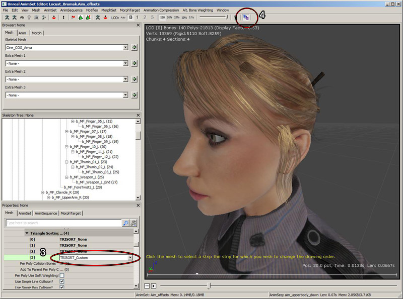
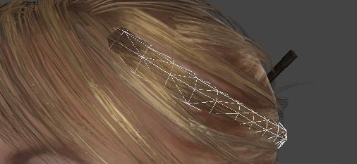
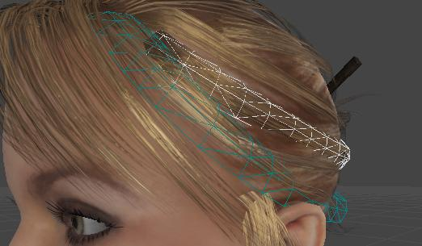

UDN
Search public documentation:
TranslucentHairSortingCH
English Translation
日本語訳
한국어
Interested in the Unreal Engine?
Visit the Unreal Technology site.
Looking for jobs and company info?
Check out the Epic games site.
Questions about support via UDN?
Contact the UDN Staff
日本語訳
한국어
Interested in the Unreal Engine?
Visit the Unreal Technology site.
Looking for jobs and company info?
Check out the Epic games site.
Questions about support via UDN?
Contact the UDN Staff
半透明头发排序
概述
要在实时游戏中渲染每一缕头发实在是太消耗内存，因此通常都是通过在多边形顶部添加多边形图层来营造头发的幻觉，从而实现头发的制作。然后使用带有半透明边的头发条带对这些多边形进行贴图处理。这种方法的潜在问题是多边形可能会彼此相交；要求是使头发看上去不要像罩在角色脑袋上的一个头盔。由于多边形相交，所以很多实时渲染器不能按照正确的顺序描画多边形，产生闪烁效果或多边形突兀显示效果。虚幻引擎 3 可以通过让美术人员控制骨架网格物体中多边形的具体渲染顺序解决这个问题。 头发还可以被替换为其他毛发，例如，毛皮或苔藓。
如何访问半透明头发排序功能？
可以通过动画集编辑器来访问头发排序功能。在那里，您可以针对那个应该是半透明头发的区域进行操作，包括排序方式。
三角形排序方式
TRISORT_None
不会对索引缓存进行排序，三角形的描画顺序是优化顶点缓存的那个顺序。TRISORT_CenterRadialDistance
找到这个 材质/部分 的所有顶点的中心。然后考虑共享同一个边的三角形的每个连续条带。首先渲染靠近网格物体中心的条带，然后渲染外面的条带。这通常会为玩家的头部提供理想的效果，因为它会先渲染较低的层次。TRISORT_Random
这个模式用于测试，它仅会随机地排列三角形。TRISORT_Tootle
这个模式使用AMD的最小化过渡描画的Tootle库来执行类似于TRISORT_CenterRadialDistance的排序。TRISORT_MergeContiguous
这种方式会尽量保留现有的描画顺序，但是如果三角形的所有条带实际上都相互连结（比如，它们共享一个边）但是在索引缓冲中不是连续的（描画顺序），那么会将它们合并组成一个连续的三角形条带。它可以用于网格物体导入后的默认描画顺序非常好但是有一些非连续的条带的情况。只要条带出现了不连续后，可以使用 TRISORT_Custom 对条带描画序列进行调整。TRISORT_Custom
这个选项允许您选择一个单独的三角形条带，并改变它的排列顺序，以便它总是在另一个头发条带的前面或后面进行渲染。 通常，最好设置头发的排序为 TRISORT_CenterRadialDistance (1)来获得较为合理的描画顺序。但是通常会有一个特殊的头发条带，我们需要改变它在其它条带的前面或后面进行描画。在下面的示例中，我们将圈上头发(2)的条带，并使它在它旁边的条带的后面进行渲染。 为了完成这个操作，我们该把排序模式改为TRISORT_Custom，然后使用ASV工具条图表启用自定义排序编辑模式。
为了完成这个操作，我们该把排序模式改为TRISORT_Custom，然后使用ASV工具条图表启用自定义排序编辑模式。

一旦处于自定义排序模式时，您便可以通过点击它来选择一个头发条带。头发条带是网格物体中的一组三角形，这些三角形至少通过一条边连接到一起。 选择的条带将会在头发上描画白色的线框。一旦您已经选中了一个头发条带，您将可以向后移动它以便可以在其它条带的后面描画该条带，或者向前移动它以便在其它头发条带的前面来描画该条带。
要想向后移动条带，可以按住B键然后把鼠标移动到另一个头发条带上。光标下的条带将渲染为蓝色，并且现在它在选中条带的后面进行渲染。让然按住B键，点击鼠标左键，这时白色的选中条带将改变它的描画顺序，它将会在蓝色条带的后面进行渲染。 要想向前移动条带，可以按住F键然后把鼠标移动到另一个头发条带上。这次是当前在选中条带前面的条带被高亮显示为蓝色。点击蓝色的条带，选中的头发将改变它的描画顺序，以便它可以在蓝色条带的前面进行描画。 在视口底部的黄色文本告诉您每步要做什么。
最后，我们按照我们期望的方式渲染了头发条带：
TRISORT_CustomLeftRight
该选项的工作方式与 TRISORT_Custom 完全相同，只是它会存储两个不同的描画顺序： 一个是在观察模型左侧时的描画顺序，一个是观察右侧时的描画顺序。在运行时，所选择的顺序将由观察者所观察的是网格物体的哪一侧决定。该选项会增加内存使用情况，截面图中的每个三角形占用 6 个字节。 工具栏中有一个按钮可以指定是否要编辑左侧或右侧描画顺序： 下面还有两个属性，它们用于指定在确定是否渲染头发的左侧或右侧时要考虑的骨骼和轴。- CustomLeftRightBoneName - 将会通过原点和轴确定头发哪一边是可见的骨骼的名称。它通常应该是头骨骼。如果将其设置为无，那么将会使用这个网格物体的原点和本地空间。
- CustomLeftRightAxis - 在相机面向网格物体的时候指向右侧的骨骼轴。您可以通过打开骨架渲染然后选择骨骼名称可视化每个骨骼的轴。每个骨骼有3个带颜色的线，红色线代表X轴，绿色代表Y轴，而蓝色代表Z轴。
三角形描画书序可视化滑块
这个滑动条允许您可视化三角形的描画顺序。把滑块移动到左侧将会按照它们渲染的顺序大量地降低显示的半透明三角形的数量，把它滑到右侧将会按照它们渲染的顺序显示更多的三角形， 它也允许您剥离半透明的层次来选择隐藏在其它条带后面的条带。 它仅对具有半透明混合模式的材质有效。
有关重新导入骨架网格物体的注意事项
在通过自定义排序重新导入一个骨架网格物体的时候，虚幻引擎3会尝试备份及存储这个排序。顶点顺序不需要一样。相反，将这个新网格物体中的头发条带里的每个三角形的参考姿势位置与之前的网格物体进行对比。如果头发条带中的所有三角形都一样，那么这个头发条带将保留描画顺序。无论如何，顶点修改后的头发条带或者是新添加的头发条带将会需要进行手动排序。如果在之前的网格物体中的所有头发条带无法与这个新的网格物体匹配，那么将会显示一个警告信息，警告用户有多少头发条带是不匹配的。
毛发的一遍光照渲染
在同一个网格物体上，多遍渲染的光照半透明无法正确地与多个重叠图层结合在一起使用，从而产生非常亮的效果。现在，一遍光照渲染设置是SkeletalMeshCinematicActor所采用的默认方法，所以可以在编辑器中放一个SkeletalMeshCinematicActor来预览它的光照情况。必须在脚本中将游戏性骨架网格物体组件的bUseOnePassLightingOnTranslucency标志设置为true，才能使用一遍渲染光照。